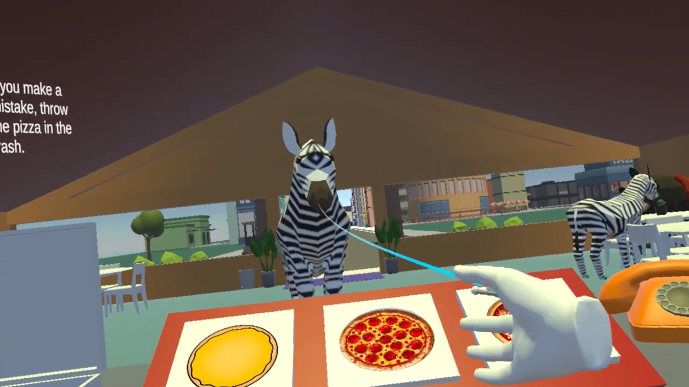

Virtual Reality Game
Unity C# Game · August 2024 – December 2024
Overview
- Led the development of the main gameplay mechanics and created custom 3D models used throughout the game.
- Worked with Unity and C++ to design interactive elements and ensure smooth player interaction in the VR environment.
- Collaborated closely with my team through agile sprints.
- Strengthened skills in game programming, 3D modeling, and working effectively with a team.
Media

Development sprints
Sprint 1
Sprint recap
In the first sprint of our VR game project, our team focused on building the core functionality. We implemented basic player movement to allow navigation within the virtual environment and created 3D models for the main pizza components in Unity, including dough, sauce, cheese, and toppings. We also developed the first version of the ingredient spawning system, which laid the groundwork for the gameplay. This sprint helped us establish a foundation for future development.
Sprint 2
Sprint recap
In the second sprint of our VR game project, we expanded the gameplay by introducing customers and phone mechanics. We implemented a system where customers appear with orders, adding a new layer of interactivity to the game. The phone mechanic was also added, allowing players to receive orders and further immersing them in the experience. In addition to these functional updates, we began decorating the interior of the pizza shop and designing the surrounding cityscape to enhance the game's visual appeal and immersiveness. This sprint brought us closer to an actual working video game.
Sprint 3
Sprint recap
In the third sprint of our VR game project, we focused on completing the core features and finalizing the gameplay loop. We added order-taking and display mechanics, allowing players to view and manage customer orders in real time. To complete the experience, we implemented a delivery system where finished pizzas could be sent out to customers. We also introduced pizza box mechanics and animations, giving players the ability to box up their pizzas before delivery. These additions tied all the previous sprints together, resulting in a fully immersive VR pizza-making game.